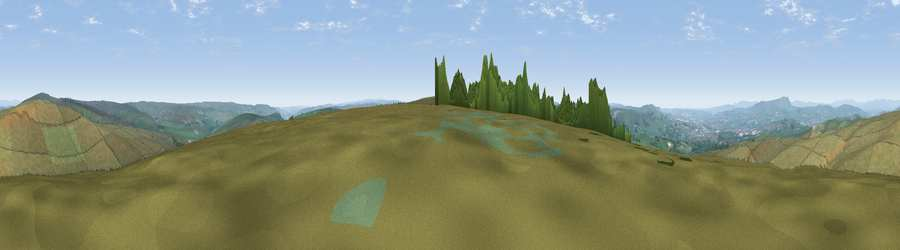

Viewpoint near Worsthorne
#12892 in England · top 19% of its area beats it · near Worsthorne · open accessWhere it is
The exact computed spot (SD 91475 30925). Click the marker for map links.
Public access: this spot lies on mapped open-access land (CRoW Act 2000) — you may roam here on foot. Computed from Natural England's CRoW access layer and OpenStreetMap rights of way — not the legal definitive map. Always verify locally.
The view, rendered

A 360° render of this exact spot computed from the terrain model, tree cover and land cover — summer colours, afternoon light, calibrated against photographs of famous viewpoints. Real trees, hedges and buildings will differ in detail.
The panorama
Grey silhouette: terrain skyline in each direction (720 bearings, Earth curvature and refraction included). Dashed green: skyline with trees (+15 m) and buildings (+8 m) as obstacles. Blue strip: how far the ground is visible on each bearing.
Where the view opens
Wedge length = distance to the farthest visible ground on that bearing (vegetation-aware). Rings at 10, 25 and 50 km.
What fills the view
93% grassland · 5% woodland · 2% built-up
Angular shares of the visible panorama (visual magnitude), not map area. Landscape diversity 0.14 (0–1 Shannon).
Key numbers
More beautiful places nearby
The staircase of upgrades: each row has a higher view potential than everything closer. Driving times are estimates from straight-line distance, calibrated against real road routing — check an actual route before setting out.
| Place | Direction | Drive | Score |
|---|---|---|---|
| Viewpoint near Cornholme | S · 1 km | ~3 min | 59.9 |
| Viewpoint near Worsthorne | NNE · 2 km | ~4 min | 60.9 |
| Hoof Stones Height | S · 2 km | ~5 min | 64.0 |
| Lad Law (Boulsworth Hill) | NNE · 5 km | ~11 min | 71.5 |
| Great Hameldon | W · 12 km | ~23 min | 74.2 |
| Pendle Hill | NW · 15 km | ~27 min | 76.5 |
| Viewpoint near Edenfield | SW · 15 km | ~27 min | 77.5 |
| Darwen Hill | WSW · 25 km | ~41 min | 80.7 |
53.77459, -2.13083 · source: screening · position refined by local search. Computed location — check access rights before visiting.